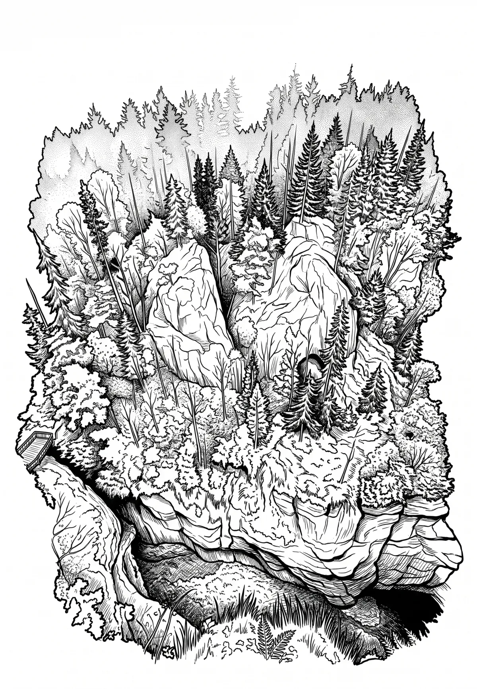

Propast Macocha
Jihomoravský kraj · 490 m n. m.

přírodní památka · #052
Propast Macocha je nejznámější propast v oblasti Moravského krasu a součást komplexu Punkevních jeskyní. Hloubka suché části propasti je 138,4 m, na jejím dně se nachází Horní (hloubka 11 m) a Dolní macošské jezírko (hloubka min. 50 m). Propast se nachází v katastrálním území obce Vilémovice.